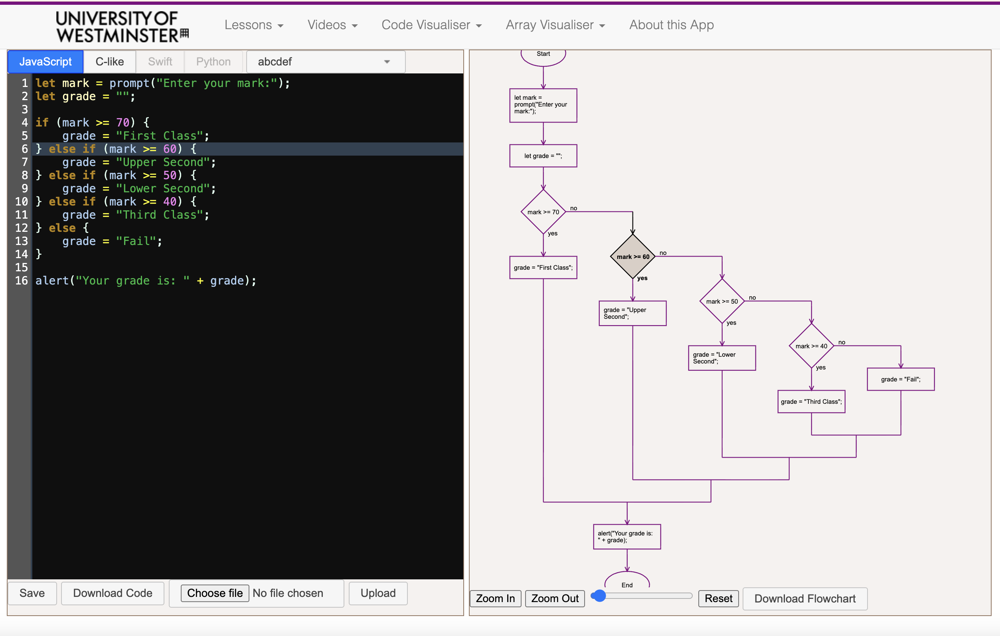

Code Visualiser
A web-based educational tool that converts code into animated SVG flowcharts in real-time, making programming concepts visible and concrete. The application includes an integrated code editor (CodeMirror), syntax highlighting (Prism), interactive lessons, and an array visualizer, all designed to help students "see" code and understand how programs flow.

Impact and Reach
Users Worldwide
Programming Languages
Code Visualisation
Free to Use
Award-Winning Innovation: Developed specifically to increase the participation of girls in programming, this project contributed to my WISE Award for International Open Source Category in 2016 (alongside my jQuery open source contributions), sponsored by Bloomberg and presented by HRH The Princess Royal. The tool demonstrates how digital innovation can transform programming education and make it more inclusive.
The Educational Challenge
Traditional programming education often proves challenging, particularly for women and students with no prior programming experience, due to its abstract nature and less inclusive classroom environments. Research and anecdotal evidence suggest that many students benefit from more concrete, visual approaches to learning code. Key challenges include:
- Abstract concepts: Programming logic can be difficult to grasp without visual representation
- Debugging difficulties: Students struggle to understand why their code doesn't work as expected
- Retention issues: Low confidence leads to higher dropout rates in programming courses
- Limited engagement: Text-based code can be intimidating for visual learners
- AI-generated code comprehension: With the rise of Generative AI, students need to understand externally generated code
Recognising these challenges, I developed the Code Visualiser to address a critical institutional need: increasing the participation and retention of women in programming, and improving success rates for all students in programming courses at the University of Westminster.
Key Features
- Real-time SVG flowchart generation: Automatic flowchart creation when code is saved or uploaded
- Code editor with 46 themes: Built with CodeMirror and Prism syntax highlighting for customizable learning experience
- Multi-language support: JavaScript, C, C++, C#, Java, Swift, Python, and pseudo-code
- Interactive lessons: Built-in tutorials for if/else, for loops, while loops, do/while loops, and switch/case
- Step-by-step animation: Run code fully or step through execution with visual highlighting
- Array Visualiser: Separate tool for graphically representing arrays and objects in JavaScript
- Download capabilities: Save flowcharts as PNG images and code as files
- Bi-directional highlighting: Hover over code to highlight flowchart elements and vice versa
Impact on Student Learning
The Code Visualiser helps students understand programming concepts that are often difficult to grasp initially, such as loops, conditional statements (if/else), and switch/case constructs. By visualizing how code flows through these structures, students can see the logic in action, making abstract concepts concrete and comprehensible.
With over 1,000 users worldwide, the tool has been adopted by students and educators beyond the University of Westminster, demonstrating its value as a learning resource. Originally developed to address fundamental challenges in programming education, the tool has gained new relevance in the era of Generative AI. As students increasingly work with AI-generated code, the ability to read and understand code written by others has become essential. The Code Visualiser's clear, visual representations help students comprehend code from any source, preparing them for real-world coding challenges.
Technology Stack
Technical Development
Developed from scratch as a solo project, the Code Visualiser required building custom parsers for six programming languages, developing algorithms to convert code constructs into SVG flowchart representations, implementing bidirectional highlighting between code and graphics, creating animation logic for step-by-step execution, and integrating multiple open-source tools (CodeMirror, Prism, Bootstrap) into a cohesive educational platform.
Scalability and Reach
The Code Visualiser's flexible design and comprehensive Learn to Code website (https://agcolom.github.io/learntocode/) make it a scalable resource with potential to transform programming education beyond Westminster. The tool is:
- Platform-independent: Works on any device with a web browser
- Language-agnostic: Supports six programming languages with architecture for adding more
- Pedagogically sound: Based on research about visual learning and cognitive load theory
- Already adopted beyond Westminster: Used by other institutions and independent learners
Recognition and Impact: This tool exemplifies innovative use of digital technology to improve teaching and learning, contributing to the WISE Award in 2016. It stands as a model for other institutions seeking to enhance their programming education and create more inclusive learning environments in STEM.